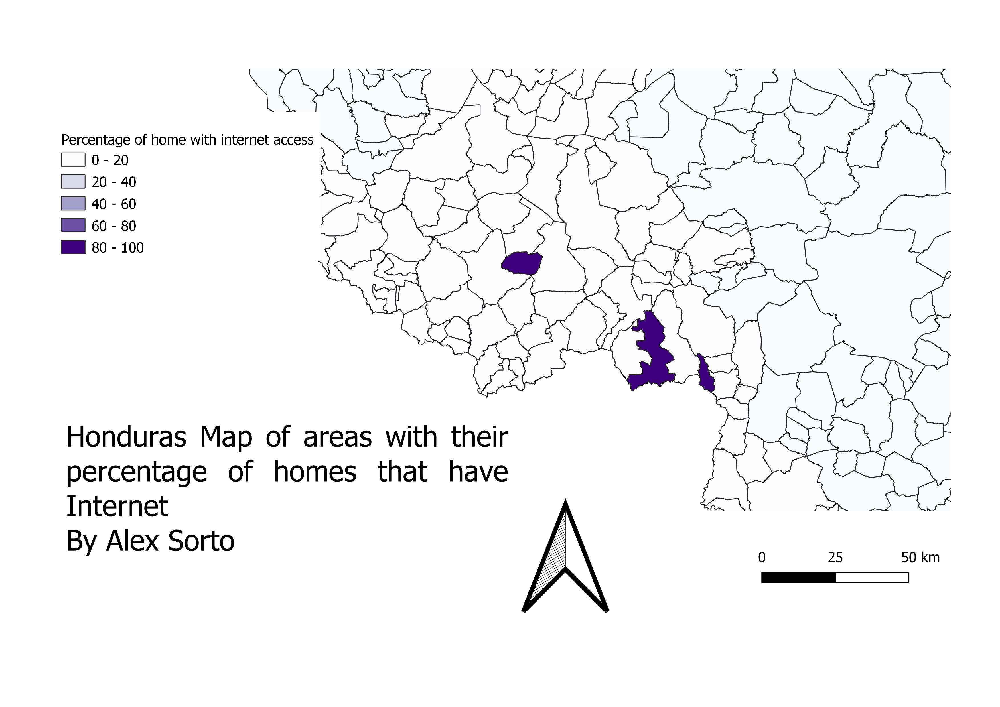

Homework 9: Choropleth of Honduras:
This is a map that displays the percentage of homes with internet access in different municipalities in Honduras.
An issue I ran into was how to allign the codes of the municipalities to make the join. I chose this map since I wanted to know if,
given the situation of the pandemic, there is a possibility for e-learning in some areas.
Alex Sorto

Data used for this project
CSV dataset from the GeoPortal of the Honduran Government
Link to shapefile from the Humanitarian Data Exchange